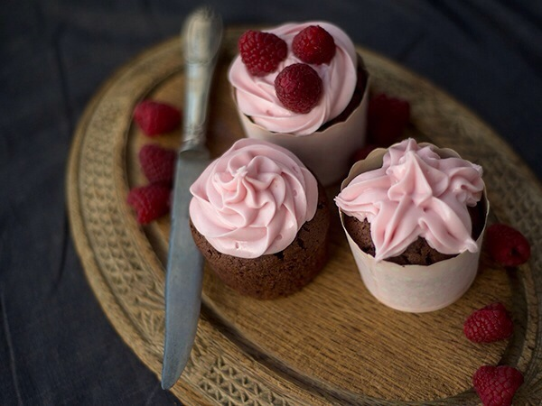

Super goda chokladcupcakes med hallonfrosting.
Ingredienser:
- 2 ägg
- 2 dl socker
- 100 gram smör
- 1 dl mjölk
- 3 dl mjöl
- 2 tsk bakpulver
- 1 tsk vaniljpulver
- 1 dl kakao
Frosting:
- 2 dl färskost
- 1,5 dl florsocker
- 0,5 dl hallon
Gör så här:
- Vispa ägg och socker pösigt.
- Smält smör och blanda i mjölk.Tillsätt mjölkblaningen i ägg och socker blaningen.
- Blanda mjöl,bakpulver,vaniljsocker i en bunke.Tillsätt mjölblaningen i mjölk och ägg blaningen.Rör om tills alla klumpar är borta.
- Dela ut smeten till alla muffinsformar på en plåt.Använd dubbla muffinsformar så att muffinsarna inte sväller över.
- Grädda i ungnen på 180 grader i ca 15 min.
- Låt dom svalna i kylen så blir dom saftiga.
- Rör ihop alla ingredienser till frostingen.Spritsa ut på alla muffins.KLAR!
